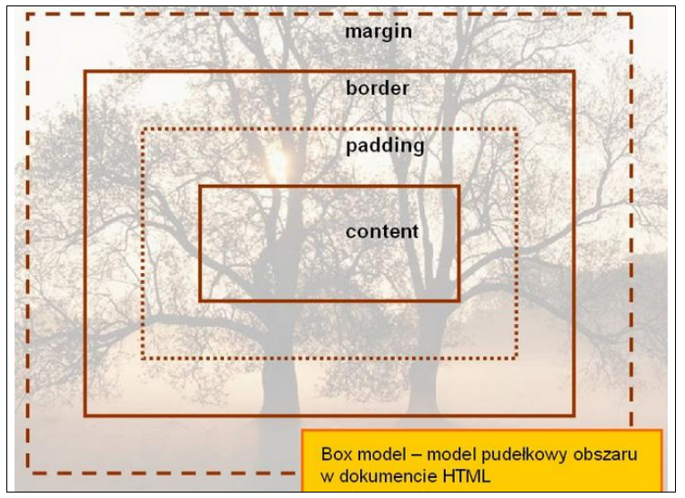
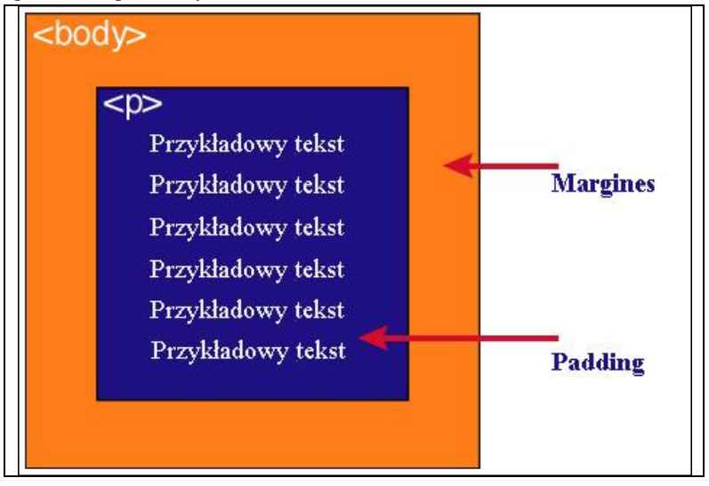

<!DOCTYPE html> <html> <head> <style> table { border: 1px solid black; } td { border: 1px solid black; } </style> <meta charset="utf-8"> <title></title> </head> <body> <h1>Definicja modelu pudełkowego</h1> <ul> <li>Każdy element w dokumencie HTML, otacza się prostokątnym obszarem zwanym pudełkiem (ang. Box model). Pudełko składa się z kilku warstw</li> </ul> <br> <table> <tr><td>Opis</td><td>Zawartość</td></tr> <tr><td>content</td><td>zawartość elementu (np.: tekst, obrazek</td></tr> <tr><td>padding</td><td>otaczające marginesy wewnętrzne, odstęp między obramowaniem i zawartością elementu</td></tr> <tr><td>border</td><td>obramowania wokół zawartości elementu, ma styl i kolor</td></tr> <tr><td>margin</td><td> marginesy wokół ramki (margines zewnętrzny). Jest to pusty obszar wokół ramki, który nie ma koloru tła i jest przeźroczysty</td></tr> </table> <br><br> <h1>Uwaga1</h1> <ul><li>Padding, border i margin mogą mieć zerową wartość.</li></ul> <h1>Uwaga2</h1> <ul><li>Tło elementu jest określone dla wszystkich z podanych powyżej obszarów z wyjątkiem marginesów zewnętrznych, które zawsze są przezroczyste (transparent).</li></ul> <br> <h1>Grafika obrazująca model pudełkowy</h1>  <br><br> <h1>Różnica pomiędzy paddingiem i marginesem</h1>  </body> </html> <!-- Daniel Wieteska -->